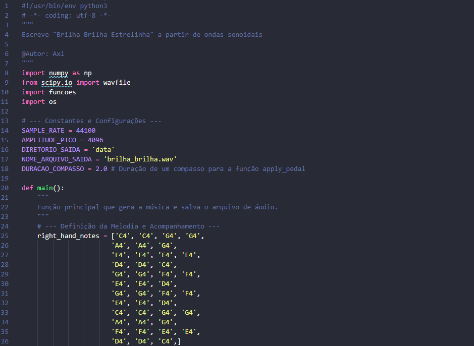
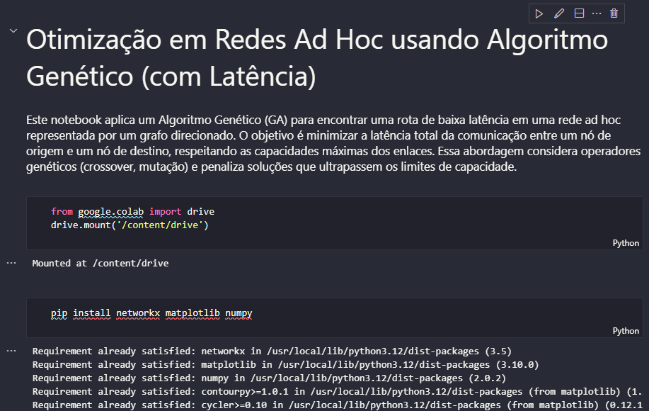

MusicaPython
Sintetizador de áudio que converte arquivos MIDI multi-instrumentais em WAV usando síntese aditiva baseada em ondas senoidais e uma interface web simples.
Vitrine técnica
Uma seleção de trabalhos que combinam matemática, programação e pesquisa aplicada. Cada projeto tem uma página própria com contexto, funcionalidades e link direto para o repositório.

Sintetizador de áudio que converte arquivos MIDI multi-instrumentais em WAV usando síntese aditiva baseada em ondas senoidais e uma interface web simples.

Estudo computacional para otimizar fluxo de dados e reduzir latência em redes ad hoc por meio de uma abordagem com algoritmos genéticos.
Coleção de minijogos de palavras em português para jogar a dois, incluindo Termooo, Contexto e Conexo, em uma aplicação estática sem backend.